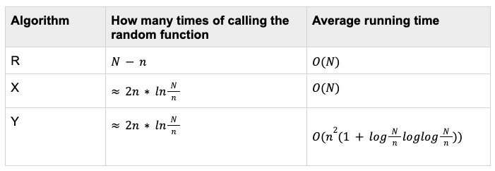

Problem
The problem is to select a random sample of size n from a set of size N with following limitation:
- N is not given and we can’t generate any knowledge of N. Hence, it needs to be finished in one pass since N is not known.
- Every element of N has the same probabilities to be selected (this is what “random sample” requires)
If N is known, it’s relatively easy to do random sampling - we will just need to generate n random numbers from[1, N]. If N is not known, how do we make sure each element will be selected with the same probability?
This problem occurs frequently in the real world. For example, to select 1000 words from a super thick dictionary whose total number of words is not known. To select 300 samples from an ongoing data stream and we don’t know when the stream will end. Therefore, optimizing this problem will help with solving these problems.
Reservoir Algorithms
Reservoir algorithms are the solution to the above random sampling problem which needs to be finished in one pass. In other words, the time complexity is O(N). A “reservoir” is created to temporarily store candidates of samples that we should only keep track of. The size of the reservoir can be larger than n or equals to n.
Algorithm R, X, and Y all major players in reservoir algorithms. The following table is a brief comparison on their performance.

Algorithm R
Both the algorithm itself and proof are pretty elegant. I will first describe the algorithm and then give a proof about the correctness of it.
Algorithm
When we are processing the kth number K:
- If Kn, which means that it’s one of the first n numbers,
- Add it to the reservoir directly.
- If K>n, which means that it’s after the first n numbers,
- Generate a random number Rfrom[1, N].
- If Rn , which means that there must be an corresponding Rth number in the reservoir of n numbers. Then we replace the Rth number with K.
- Process the next number with the same steps as above until reaching N.
Time complexity. The time complexity is O(N) because we will need to scan every number for exactly one time and it takes constant time to process each number.
Example
Given an array [1, 2, 3, 4…], we are selecting a random sample of size 3. So in this example n = 2.
When we are processing 1 and 2, we can simply place numbers into the reservoir. If the streaming ends at 2, each number will have the same probability of 1 to be selected.
The reservoir is [1, 2] now. When we are processing 3, we will calculate a random number R from [1, 3]. If R is 1, we will replace 1 with 3 so that the reservoir will be [3, 2]. In this case, the probability of 3 being placed to the reservoir is 2/3. The probability of 1 or 2 being kept in the reservoir is 1 - 2/3 * 1/2 = 2/3 which is the same.
The reservoir is [3, 2] now. When we are processing 4, we will calculate a random number R from [1, 4]. If R is 2, we will replace 2 with 4 so that the reservoir will be [3, 4]. In this case, the probability of 4 being placed to the reservoir is 2/4. The probability of 3 or 2 being kept in the reservoir is 2/3 _ (1 - 2/4 _ 1/2) = 2/4 which is the same.
It will keep the same pattern when we are processing 5, 6, 7…. I will provide a proof as follows.
Proof by induction
Notation. when we are processing the ith number (to decide to include in the reservoir or not), we use the following notations to represent the event and probability:
Xi: a random variable that represents the event to include the ith number in the reservoir or not.
Xi takes 2 values:
- Xi=1: the ith number is included in the reservoir
- P(Xi=1): the probability of the ith number being included in the reservoir
- Xi=0: the ith number is not included in the reservoir
- P(Xi=0): the probability of the ith number not being included in the reservoir
- P(Xi=1) + P(Xi=0)=1
Proof
When i n, the probability of the ith number being included in the reservoir is
P(Xi=1) = 1
or we can say
P(X1=1) = P(X2=1) = ······ = P(Xi=1) = 1
When i > n, the probability of the ith number being included in the reservoir is
P(Xi=1) = n/i
or we can say
P(X1=1) = P(X2=1) = ······ = P(Xi=1) = n/i
- We assume that it’s true and want to prove that the i+1th number also holds true. In other words, we are proving
P(X1=1) = P(X2=1) = ······ = P(Xi+1=1) = n/(i+1)
When i=i+1, the probability of the (i+1)th number being selected to the reservoir is
P(Xi+1=1) = n/(i+1)
Part of the above equation is proved. Now we need to prove that the probability of the current numbers in reservoir being kept in the reservoir is n/(i+1) too since each number shall share the same probability to be selected to the reservoir.
The probability of the current numbers in reservoir not being changed at this iteration is
1 - P(Xi+1=1) * (1/n)
1/n is the probability that a specific number in the reservoir is being selected under the condition that the (i+1)th number got the ticket to the reservoir.
The total probability of the current numbers in reservoir not being changed after all iterations is the above probability times P(Xi=1)
P(X1=1) = P(X2=1) = ······
= P(Xi=1) _ (1 - P(Xi+1=1) _ (1/n))
= (n/i) _ (1 - n/(i+1) _ (1/n))
= n/(i+1)The algorithm is proved since it makes sure every number can be selected at the same probability. Elegant?
Algorithm X and Y
Motivation
Algorithm R has to calculate random numbers from [1, n] for n-k times which can be optimized. The core of Algorithm R is the random number generator which makes some numbers gaining the “ticket” to go to the reservoir(when Xi=1) while some don’t(when Xi=0). If the generator “kicks out” some numbers, that means there are some numbers that wouldn’t get the “ticket” to get into the reservoir in the end, why don’t we skip these numbers at the very beginning?
If we can calculate how often a “lucky” number occurs, we can simply jump to this “lucky” number and skip all before it since we only need to place it in the reservoir. Algorithm X and Y does this.
Common Pattern
Algorithm X and Y optimize algorithm R in the times of calling the function that generates a random number. It “predicts” where the next lucky number is and is followed by following steps:
- Calculate how many numbers we shall skip: (n, i).
- Skip (n, i) numbers.
- Randomly select a number in the reservoir and replace it with the next number (the “lucky” number).
- Repeat the above steps until the last number.
How to calculate
Therefore,
F(s)=P($\phi$<=s)=1-P($\phi$>s)
=1-(1-n/(i+1))(1-n/(i+2))···(1-n/(i+s+1))
=1-(i+1-n)(i+2-n)···(i+s+1-n)/(i+1)(i+2)···(i+s+1)
=1-(i+1-n)(i+2-n)···(i+s+1-n)/(i+1)(i+2)···(i+s+1)
How to find s that satisfying the above function? We can make use of inverse transform sampling. Yes it will help us to randomly generate an s that satisfies the distribution.
To do inverse transform sampling, we need an inverse function of F(s) which is F-1(U). Since $F(s) \in [0, 1]$, $U \in [0, 1]$as well. Therefore with a randomly generated U we are able to find a specific s which satisfies the distribution F(s) and thus we find the minimized number of elements to skip.
Therefore, we will only need to solve the following inequation where Uis randomly generated from[0, 1]:
(i+1-n)(i+2-n)···(i+s+1-n)/(i+1)(i+2)···(i+s+1) <= 1-U (1.1)
where i, n, Uare all known and the goal is to get s. Since the left-hand side of the inequation is so complicated, we will need to think about how to solve the inequation. The key difference between X and Y is the way to solve the inequation. With the s generated, they share the same steps as I listed above.
Algorithm X
To solve inequation (1.1), we can use a brute force solution Algorithm X. It finds s by sequentially search for the minimum s, trying out all values in an increasing order until reaching the critical value. Therefore, the whole procedure of Algorithm X is:
- Generate a random number $u \in [0, 1]$.
- Search sequentially for the minimum s >= 0 such that F(s) <= u.
- Skip s numbers.
- Randomly select a number in the reservoir and replace it with the next number (the “lucky” number).
- Repeat the above steps until the last number.
Time complexity. It’s faster than Algorithm R since it generates the random number only one time after the generation of $\phi$, compared to calling $\phi$ times after the generation of $\phi$ in Algorithm R. However, the time complexity of Algorithm X is O(N)in average because the sequential search takes O($\phi$+1)time.
Algorithm Y
Algorithm Y shares the same idea with Algorithm X in terms of the goal of generating how many numbers to skip. It uses Newton’s interpolation method to solve inequation (1.1) in order to find the minimum s. I will not give the detailed proof on this method here. The idea is to turn the inequation (1.1) to a new equation as below and find the “approximate root” of equation,
(i+1-n)(i+2-n)···(i+s+1-n)(i+1)/(i+2)···(i+s+1)$\approx$ 1-U
Time complexity. With the help of Newton’s method, this is faster than sequentially searching for an s. It converges to get s in O(1+loglog$\phi$)iterations. Therefore the average running time would be O(n^2*(1+log(N/n)loglog(N/n)))on which the author provided a wonderful proof.
Summary
The author also developed a faster Algorithm Z in the end but I will not discuss it in this article since it’s faster than Algorithm Y by a polynomial factor (it’s great, but…let’s focus on Y). A big jump is from Algorithm R to Algorithm Y with:
- The idea of skipping numbers and,
- The usage of Newton’s interpolation method to find out the proper number of elements to skip during each iteration.
To sum up, a series of reservoir algorithms such as R, X, and Y were developed and were optimized. All of them need to create a reservoir to temporarily store correct samples in case that it’s needed at any time (i.e., the date stream ends at any time and the reservoir will be able to provide the correct result correspondingly).
R decides whether to place the number into the reservoir on EVERY number so the running time is not that optimal (but still decent!). X and Y only decide whose destiny is “in” so it skips those unlucky guys. Moreover, Y optimizes on the algorithm to find those lucky guys so the running time is the optimal among them.
Reference
Vitter, J. S. (1985). Random sampling with a reservoir. ACM Transactions on Mathematical Software (TOMS), 11(1), 37-57.
https://nbviewer.jupyter.org/github/jameslao/Algorithmic-Pearls/blob/master/ReservoirSampling.ipynb